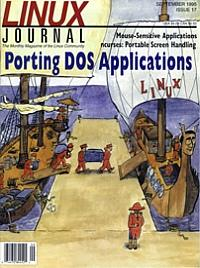

Shutdown Archive web server
Search:
Linux Journal
Issue #17/September 1995

Features
ncurses: Portable Screen Handling for Linux
by Eric S. Raymond
An introduction to the new, reliable, powerful ncurses library.
Writing Mouse-Sensitive Applications
by Alessandro Rubini
Use gpm to turn text-oriented programs into mouse-sensitive applications.
Porting DOS Applications to Linux
by Alan Cox
Lots of practical tips for porting your DOS applications.
News & Articles
Two Eiffel Implementations
by Dan Wilder
Linux Tips: Open Look Window Manager
by Robert A. Dalrymple
Moo-Tiff Development Environment
by Bogdan Urma
Reader Survey Results
Reviews
Book Review
Casting the Net
by Danny Yee
Book Review
Unix Philosphy
by Belinda Frasier
Columns
Letters to the Editor
Stop the Presses
by Phil Hughes
Novice to Novice
Databases
by Dean Oisboid
New Products
Kernel Korner
System Calls
by Michael K. Johnson
Archive Index
Shutdown Archive web server
Search:
Copyright © 1994 - 2018
Linux Journal
. All rights reserved.